この1ページに、本番で描くもの全部が入っています。 毎日ここを開いて、見ないで描けるまでくり返してください。
設計は本来いくらでも答えがあります。でも残り20日で「どんな条件でも設計できる力」は つきません。だから逆に考えます。
木造の家は 910mm という単位で作られています。畳の短いほうの辺の長さです。 この910mmを1マスとして、方眼紙のように建物を区切ります。
部屋の広さは、ぜんぶこのマスの数で決まります。 たとえば 4マス = 3.31㎡（トイレ）、8マス = 6.62㎡（階段）、 36マス = 29.81㎡（お店の売場）。 面積表を計算するときも、マスの数 × 0.8281 でおしまいです。
図面では、柱と壁が並ぶ線を「通り」と呼びます。この型では たて（南北）に A・B・C・D の4本、よこ（東西）に 1・2・3・4 の4本だけ。 この8本を覚えれば、平面図も伏図も同じ骨格で描けます。
| 通り | 位置 | 建物の端からの距離 |
|---|---|---|
| A | 西の外壁 | 0 |
| B | 階段の東側の壁 | 1,820（2マス） |
| C | 建物の中の間仕切り | 4,550（5マス） |
| D | 東の外壁 | 7,280（8マス） |
| 1 | 南の外壁（道路側） | 0 |
| 2 | 玄関の奥の壁 | 1,820（2マス） |
| 3 | 建物の中の間仕切り | 5,460（6マス） |
| 4 | 北の外壁 | 9,100（10マス） |
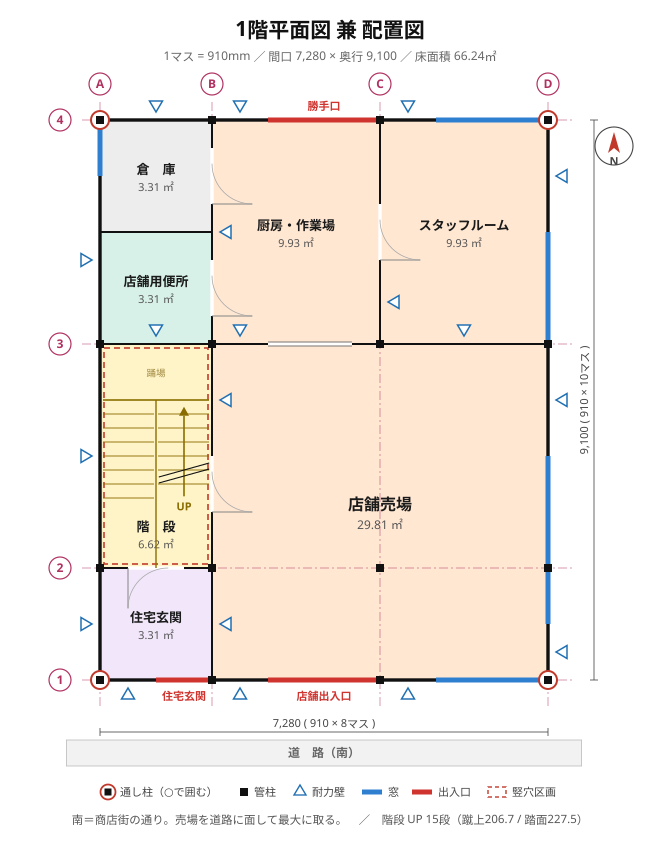
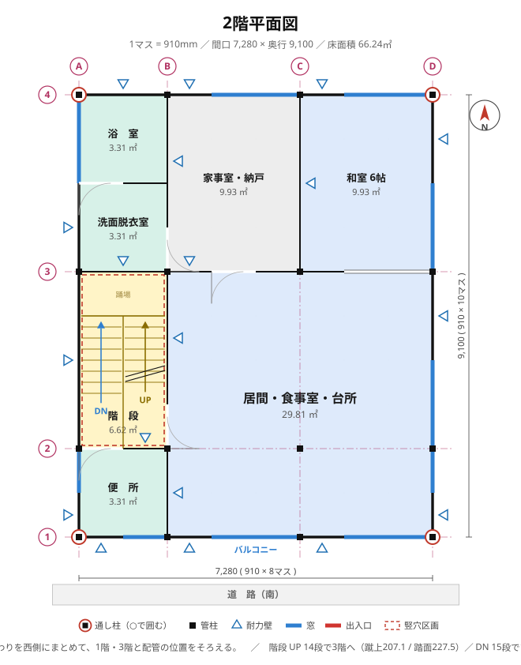
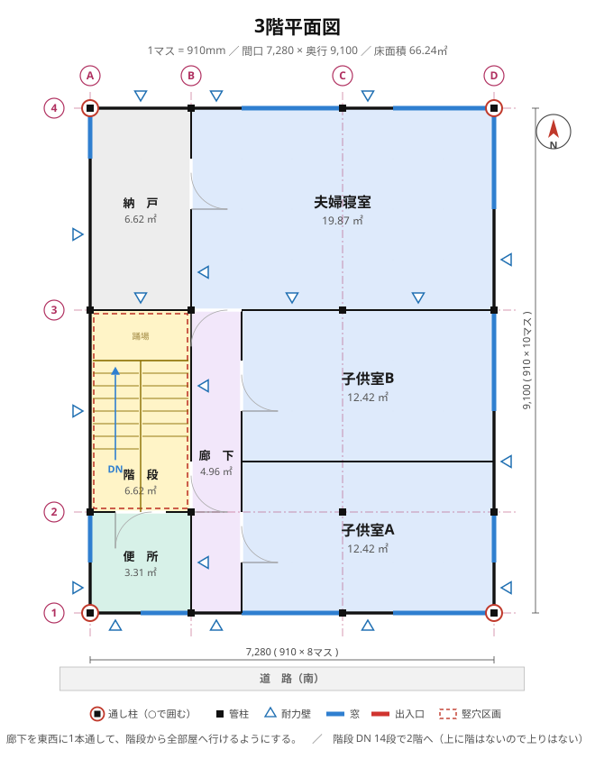
面積表はマスの数を数えて掛け算するだけです。 1マス＝0.910 × 0.910 ＝ 0.8281㎡。
| 階 | 室名 | マス | 面積(㎡) |
|---|---|---|---|
| 1階 | 店舗売場 | 36 | 29.81 |
| 厨房・作業場 | 12 | 9.94 | |
| スタッフルーム | 12 | 9.94 | |
| 階段 | 8 | 6.62 | |
| 住宅玄関 | 4 | 3.31 | |
| 店舗用便所 | 4 | 3.31 | |
| 倉庫 | 4 | 3.31 | |
| 1階 合計 | 80 | 66.25 | |
| 2階 | 居間・食事室・台所 | 36 | 29.81 |
| 和室 6帖 | 12 | 9.94 | |
| 家事室・納戸 | 12 | 9.94 | |
| 階段 | 8 | 6.62 | |
| 浴室 | 4 | 3.31 | |
| 洗面脱衣室 | 4 | 3.31 | |
| 便所 | 4 | 3.31 | |
| 2階 合計 | 80 | 66.25 | |
| 3階 | 夫婦寝室 | 24 | 19.87 |
| 子供室A | 15 | 12.42 | |
| 子供室B | 15 | 12.42 | |
| 階段 | 8 | 6.62 | |
| 納戸 | 8 | 6.62 | |
| 廊下 | 6 | 4.97 | |
| 便所 | 4 | 3.31 | |
| 3階 合計 | 80 | 66.25 | |
| 延べ面積 | 240 | 198.74 | |
木造3階建てでいちばん大事なのが、上の階の柱の真下に、下の階の柱があること です。ずれていると、上の重さが梁だけで支えられて危険になります。 この割合を「直下率」といい、高いほど良い構造です。
この型では、柱は3階とも同じ16本です。
| 種類 | 本数 | 位置 | 大きさ |
|---|---|---|---|
| 通し柱 | 4 | 建物の四隅（A1・D1・A4・D4） | 120×120 |
| 管柱 | 12 | A・B・C・D と 1・2・3・4 の交点 | 105×105 |
通し柱は1階から3階まで1本の木で通っている柱、管柱は各階ごとの柱です。 四隅を通し柱にするのは、建物のねじれに対していちばん効くからです。
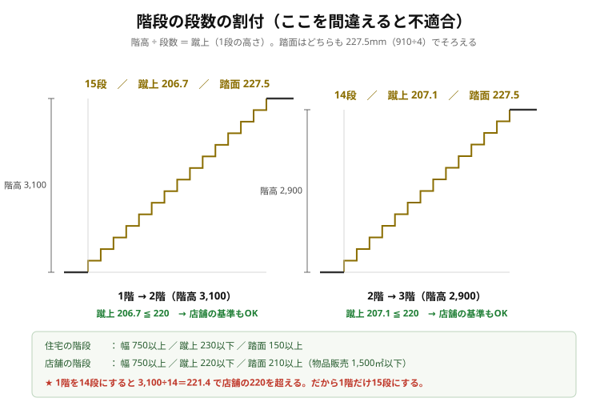
もともとの型では「14段割りで蹴上207」となっていましたが、 これは2階→3階だけの話です。
1階→2階は階高が3,100mmあるので、14段だと 3,100 ÷ 14 ＝ 221.4mm。 お店の階段の基準（蹴上220mm以下）を超えてしまいます。
だから1階だけ15段にします。3,100 ÷ 15 ＝ 206.7mm。 これなら住宅の基準（230mm以下）もお店の基準（220mm以下）も両方クリアするので、 当日どんな条件が出ても直さずに済みます。
| どこ | 階高 | 段数 | 蹴上 | 踏面 | 判定 |
|---|---|---|---|---|---|
| 1階 → 2階 | 3,100 | 15 | 206.7 | 210 | 住宅も店舗もOK |
| 2階 → 3階 | 2,900 | 14 | 207.1 | 210 | 住宅も店舗もOK |
階段室は2マス×4マス（1,820 × 3,640）の折り返し階段。 15段なら段鼻から段鼻までの長さは 210 × 14 ＝ 2,940mm なので、折り返せば十分入ります。
伏図に出てくる数字はすべて「幅 × せい」の順です。 せい＝上下方向の高さ。木を輪切りにしたときのよこ × たてを書いています。
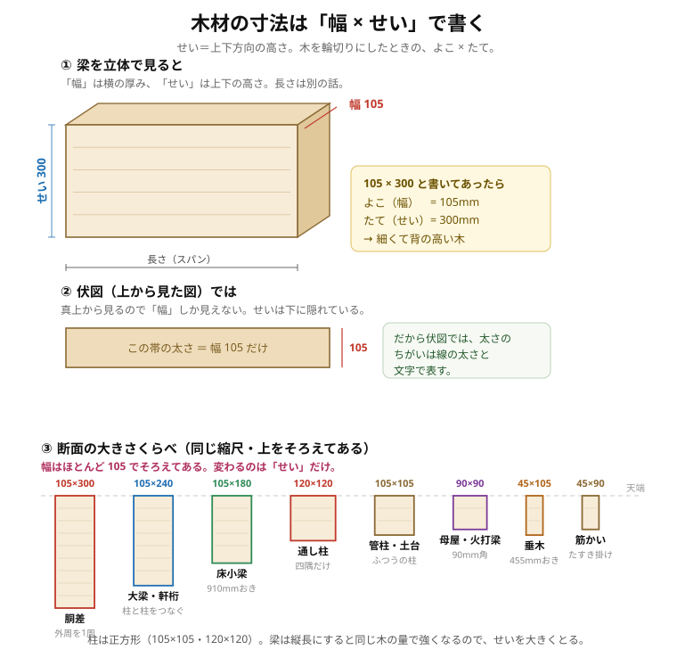
| 書き方 | よこ（幅） | たて（せい） | 形 |
|---|---|---|---|
| 通し柱 120×120 | 120 | 120 | 正方形 |
| 管柱・土台 105×105 | 105 | 105 | 正方形 |
| 胴差 105×300 | 105 | 300 | 細くて背が高い |
| 大梁・軒桁 105×240 | 105 | 240 | 細くて背が高い |
| 床小梁 105×180 | 105 | 180 | 細くて背が高い |
| 母屋・火打梁 90×90 | 90 | 90 | 正方形 |
| 垂木 45×105 | 45 | 105 | 細くて背が高い |
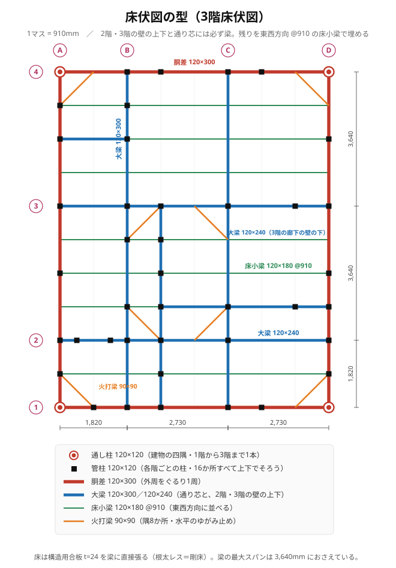
床を作っている木の棒（梁）の並べ方を、真上から見た絵です。 床板をはがして骨だけにした状態、と思ってください。
四角い枠は、押すと平行四辺形にゆがみます。その角に斜めの棒を入れると ゆがまなくなります。それが火打梁です。床が水平方向にねじれるのを止める部材 と覚えてください。
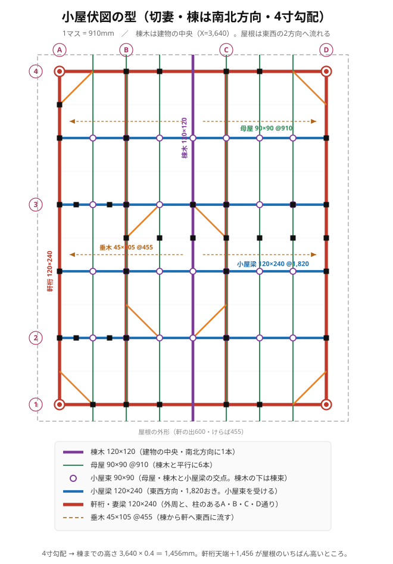
| 名前 | 読み | 何をする棒か | 大きさ |
|---|---|---|---|
| 棟木 | むなぎ | 屋根のてっぺんに1本通る棒 | 105×105 |
| 母屋 | もや | 棟木と平行に910mmおきに並ぶ棒 | 90×90 |
| 軒桁 | のきげた | 屋根の下の端で壁の上に載る棒 | 105×240 |
| 垂木 | たるき | 棟から軒へ流れる細い棒（455mmおき） | 45×105 |
| 小屋束 | こやづか | 小屋梁の上に立てて母屋を支える短い柱 | 90×90 |
| 小屋梁 | こやばり | 束を載せるための水平の梁 | 105×240 |
切妻屋根で、棟が南北方向。屋根は東西の2方向に流れます。 建物の幅は7,280mmなので、端から棟までは半分の 3,640mm。 4寸勾配とは「よこ10進むとたて4上がる」という意味なので、
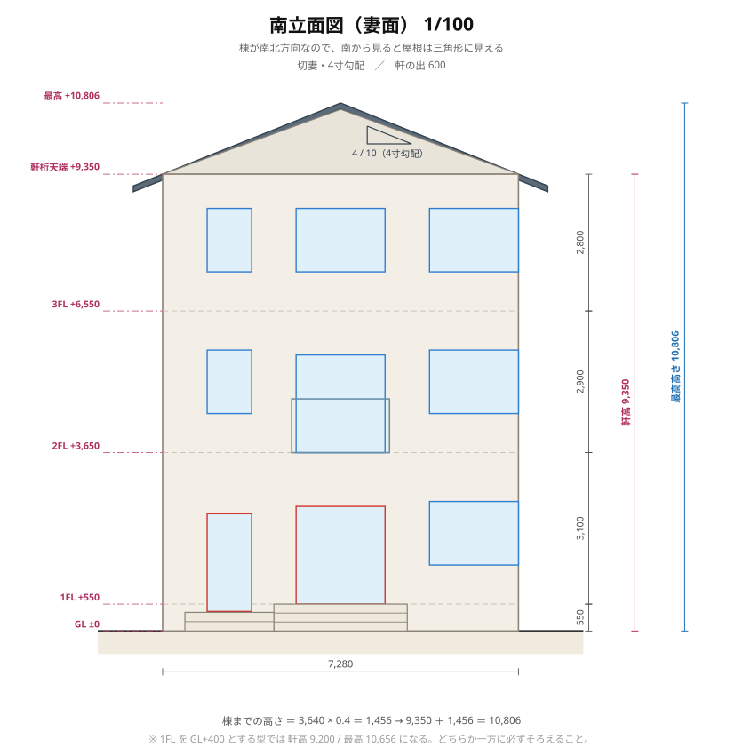
| 高さ | GLから | 計算 |
|---|---|---|
| 1FL（1階の床） | +550 | 基礎の上に土台・床板を積んだ高さ |
| 2FL | +3,650 | 550 ＋ 3,100 |
| 3FL | +6,550 | 3,650 ＋ 2,900 |
| 軒高（軒桁の上） | +9,350 | 6,550 ＋ 2,800 |
| 最高の高さ（棟） | +10,806 | 9,350 ＋ 1,456 |
部分詳細図が分かりにくいのは、「建物のどこを、どっち向きに切ったのか」 が書かれていないからです。まずそこから確認します。
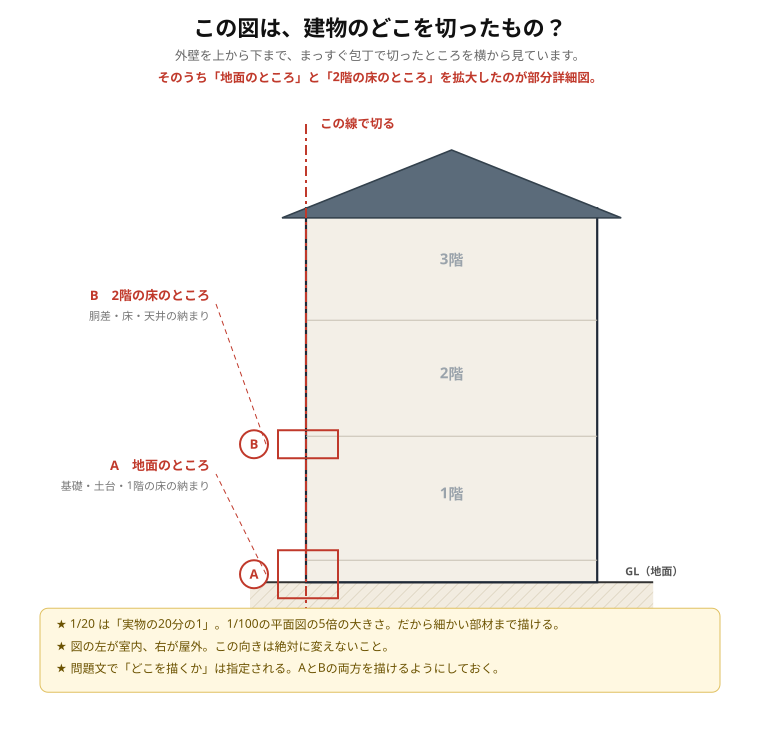
縦に切った図だと外壁は細長くて、6つの層がつぶれて見えません。 そこで壁を水平に切って上から見た形にしました。
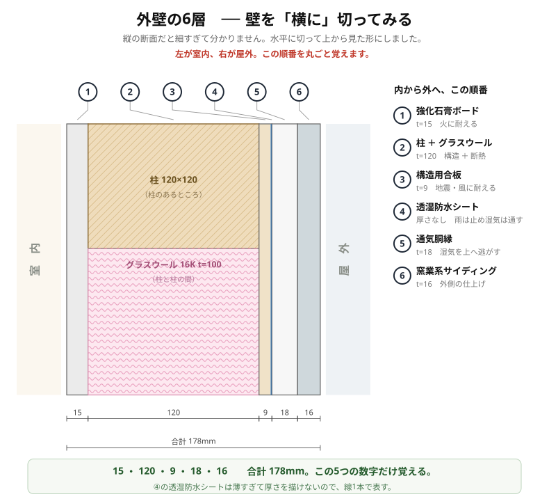
| 順 | 材料 | 厚さ | 役目 |
|---|---|---|---|
| 1 | 強化石膏ボード | 15 | 火に耐える（準耐火45分の要） |
| 2 | 柱 ＋ グラスウール16K | 105 | 構造 ＋ 断熱 |
| 3 | 構造用合板 | 9 | 地震・風に耐える（壁倍率2.5） |
| 4 | 透湿防水シート | — | 雨は止め、湿気は通す |
| 5 | 通気胴縁 | 18 | すき間を作り湿気を上へ逃がす |
| 6 | 窯業系サイディング | 16 | 外側の仕上げ |
| 合計 | 163 | 外壁の厚さ | |
15・105・9・18・16。この5つの数字だけ覚えます。 柱を切ったところは木、柱と柱の間は断熱材が見えます。
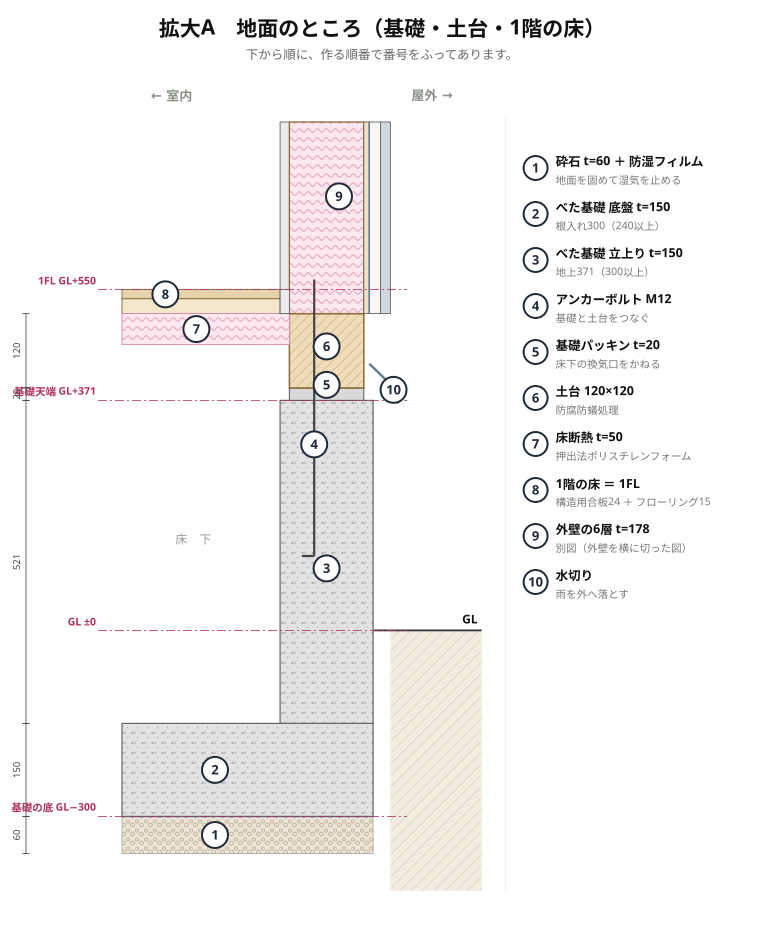
| 番 | 部材 | 寸法 | なんのため |
|---|---|---|---|
| 1 | 砕石 ＋ 防湿フィルム | t=60 | 地面を固めて土の湿気を止める |
| 2 | べた基礎 底盤 | t=150 | 重さを地面全体に分ける（根入れ300） |
| 3 | べた基礎 立上り | t=150 | 土台を載せる台。地上386（300以上） |
| 4 | アンカーボルト | M12 | 基礎と土台をつなぎ止める（2,730以下） |
| 5 | 基礎パッキン | t=20 | すき間を作って床下を換気する |
| 6 | 土台 | 105×105 | 柱を受ける横木。防腐防蟻処理 |
| 7 | 床断熱 | t=50 | 押出法ポリスチレンフォーム |
| 8 | 1階の床 ＝ 1FL | 24＋15 | 構造用合板の上にフローリング |
| 9 | 外壁の6層 | t=163 | 11-2の図と同じもの |
| 10 | 水切り | — | 雨を外へ落として壁の中に入れない |
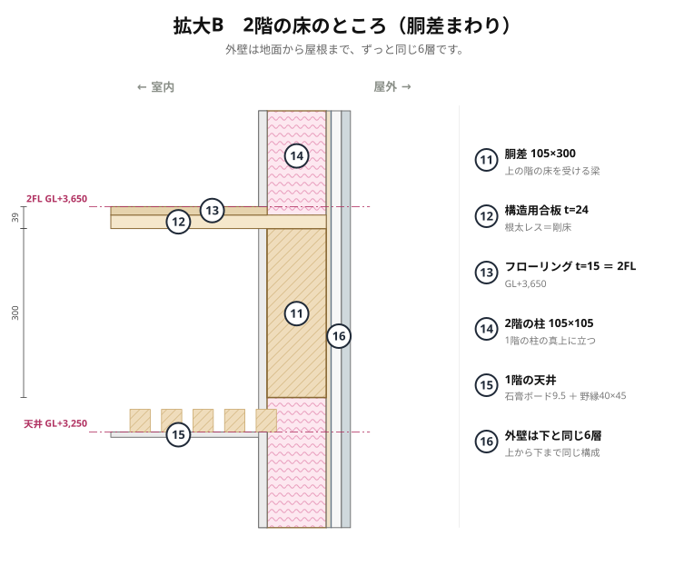
| 番 | 部材 | 寸法 | なんのため |
|---|---|---|---|
| 11 | 胴差 | 105×300 | 2階の床を受ける、外周を1周する梁 |
| 12 | 構造用合板 | t=24 | 梁に直接張る（根太レス＝剛床） |
| 13 | フローリング ＝ 2FL | t=15 | GL+3,650 |
| 14 | 2階の柱 | 105×105 | 1階の柱の真上に立つ（直下率） |
| 15 | 1階の天井 | t=9.5 | 石膏ボード ＋ 野縁40×45＠455 |
| 16 | 外壁 | t=163 | 下と同じ6層が続く |
AとBを1枚につないだものが解答用紙に描いて出す図です。 間の同じところは破断線（ギザギザの線）で省略します。
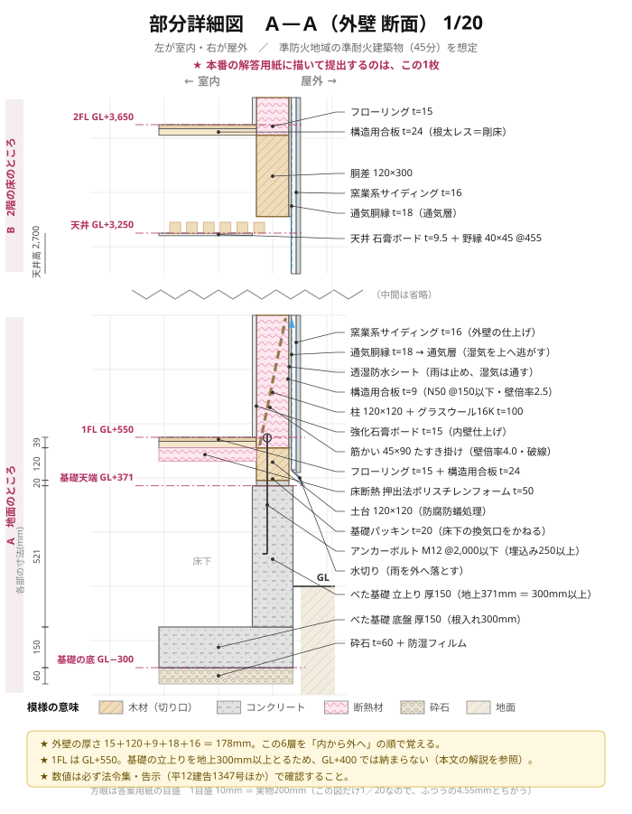
| 分 | やること | 中身 |
|---|---|---|
| 3 | 基準線を引く | GL・1FL・2FL の横線と通り芯の縦線 |
| 4 | 基礎を描く | 砕石 → 底盤 → 立上り → アンカーボルト |
| 3 | 土台と1階の床 | 基礎パッキン → 土台 → 構造用合板 → フローリング |
| 6 | 外壁の6層を上まで通す | 内から外へ 15・105・9・シート・18・16 |
| 5 | 2階の床・胴差・天井 | 破断線を先に引いてから上を描く |
| 4 | 寸法と部材名を書き込む | ここを飛ばすと点にならない。必ず時間を残す |
本番でこの型どおりに置けないことは必ず起きます。そのときの優先順位です。
| 起きたこと | どう直すか |
|---|---|
| 敷地が細長くて7,280×9,100が入らない | マスの数を変える（例：7マス×11マス）。910の倍数は絶対に崩さない |
| 要求室が1つ増えた | 納戸・倉庫をつぶして入れる。売場と居間は最後まで削らない |
| 「客用便所」と指定された | 便所と倉庫を入れかえて、売場のとなりに持ってくる |
| 駐車場・駐輪場が要求された | 建物を敷地の北に寄せて、南に空地を作る。建物の形は変えない |
| 階段の位置を指定された | 指定に従う。ただし3階とも同じ位置だけは死守する |
| どうしても収まらない | 要求室を全部入れることを最優先。多少不格好でも欠落よりはるかにマシ |